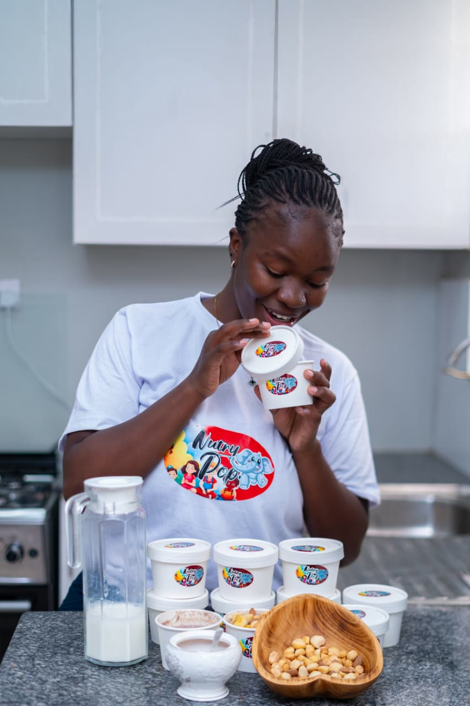
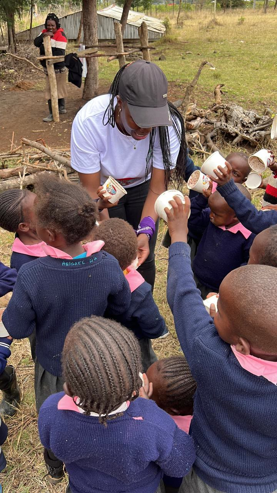
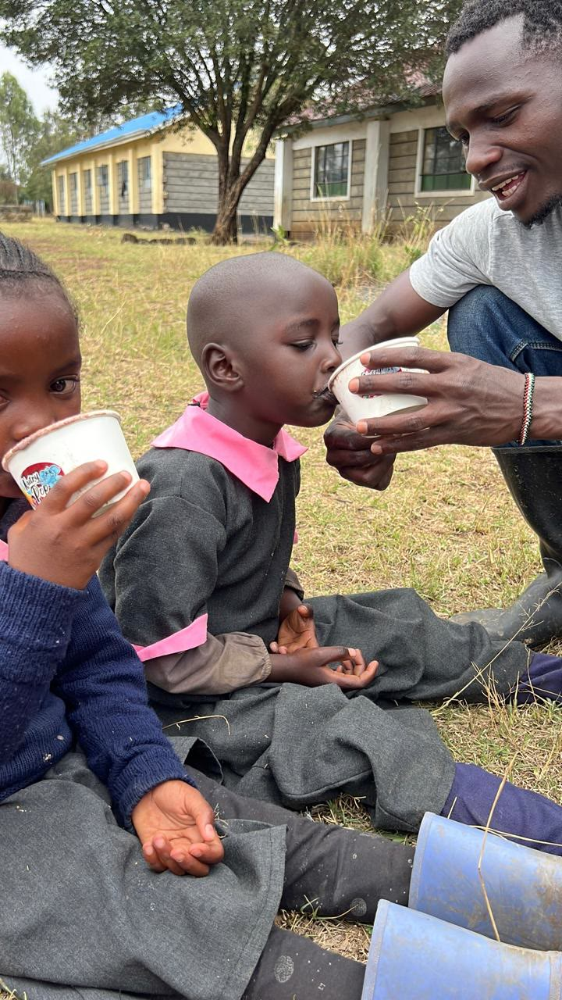
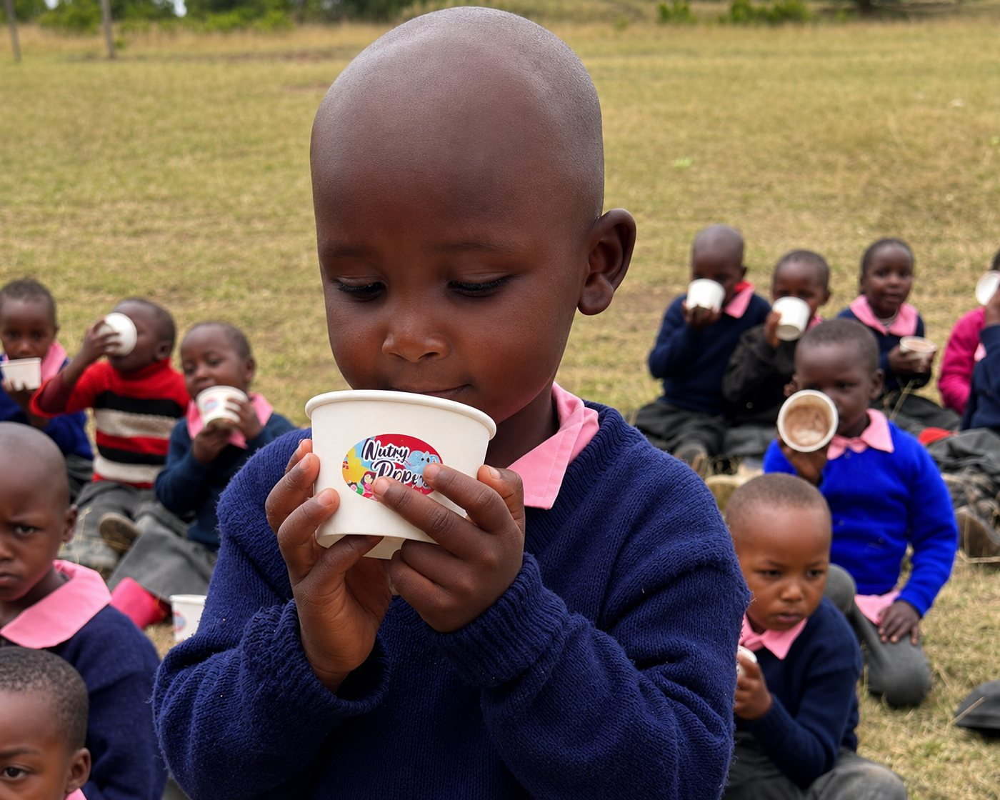

NutriPop: a warm cup of porridge that keeps children in school.
An instant porridge of dryland sorghum and other nutrient-rich ingredients, served to Early Childhood Development (ECD) pupils in the same farming communities that grow it.


Made fromrestored land
A warm cup of porridge, grown by mothers.
NutriPop blends sorghum from dryland harvests with other nutrient-rich ingredients. Unlike traditional porridge, which takes a long time to cook, it is ready almost instantly, saving time for schools and families.
- Made from
- Sorghum grown by women farmers on restored land, blended with other nutrient-rich ingredients
- Design
- A 30g single-serve sachet that prepares instantly as warm porridge
- Made for
- Children in Early Childhood Development (ECD) schools
- Reaches schools
- Through school-feeding partners, at prices parents can manage
- Stage
- Minimum viable product, being refined to meet our nutrition targets
From the farm to the classroom.
- 10+Schools reached
- 700+Sachets served to children
- 30%Of each harvest becomes NutriPop
Four hands between the field and the cup.
How market demand pays for restoration.
Kenya imported 17.7 million kg of sorghum in 2024. We turn that demand into a land-regeneration engine.
Women farmers
Grow drought-resistant sorghum on restored land and earn income from it.
EcoRafiky
Buys the harvest, processes it and sells it on.
Breweries
Schools & NGOs (NutriPop)
Every sachet of NutriPop is part of a supply chain that pays for restored land.
NutriPop in schools.



NutriPop FAQ
Sorghum grown by women farmers on restored land in Kenya's arid and semi-arid areas, blended with other ingredients rich in nutrients for growing children.
It's designed for children in Early Childhood Development (ECD) schools, especially in the farming communities where the sorghum is grown.
It is instant. Traditional porridge has to be cooked for a long time, but NutriPop is ready almost straight away. That saves time for school cooks, teachers and parents on busy mornings.
Sorghum is drought-resistant, so it grows on dry, restored land where other crops fail. Buying it gives women farmers an income and keeps their land under restoration.
NutriPop has reached minimum viable product stage and is being refined to meet our nutrition targets. Rollout to the first schools is planned for 2026. Contact us to join.